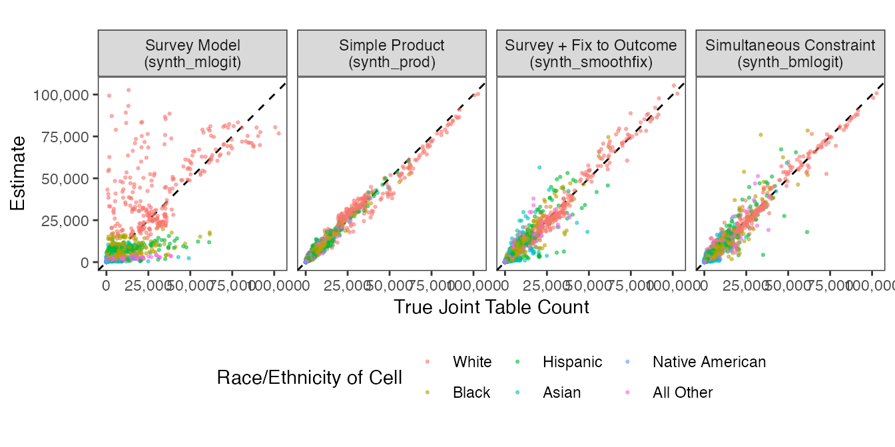
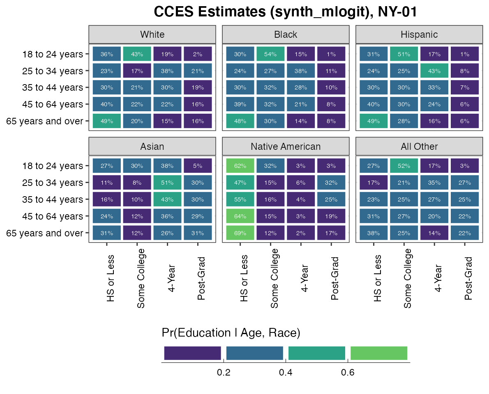
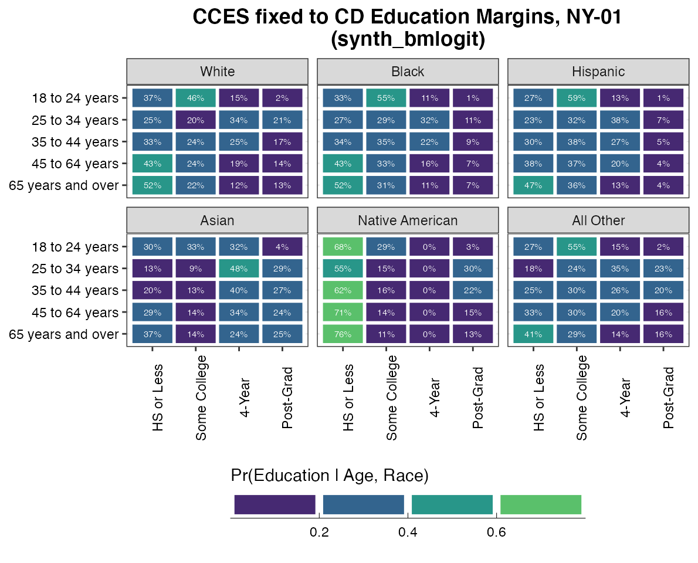
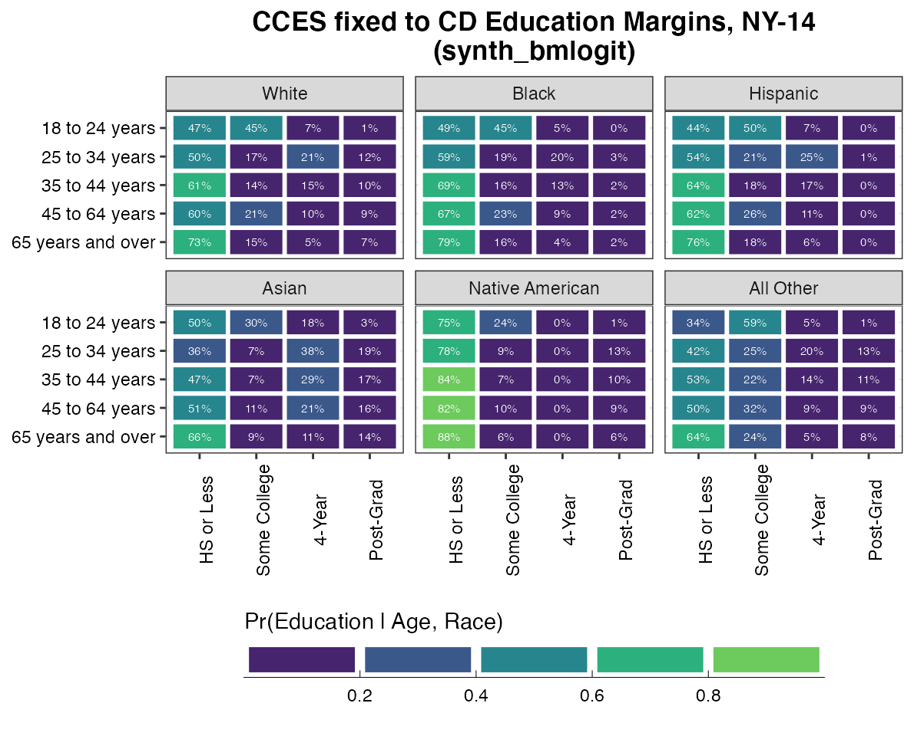

library(ccesMRPprep)
library(tidyverse)
library(scales)
library(furrr)
plan(multisession, workers = 6)Almost all survey weighting, whether MRP or not, face a data limitation that direct knowledge of the joint distributions of predictors (such as race, partisanship, and geography) are limited. There is a long tradition of statistical and applied work that can be grouped under the umbrella of synthetic population imputation: it seeks to expand the set of available interactions to poststratify on. The core idea has parallels in iterative proportional fitting (Deming and Stephan), ecological inference, and latent factorization methods.
We can classify the main approaches by what outside data they leverage:
| Main Idea | Functions | Examples |
|---|---|---|
| Use Population Margins | synth_prod() |
Leemann and Wasserfallen (2017) |
| Use Microdata | synth_mlogit() |
Kastellec et al. (2015) |
| Combine both | synth_smoothfix() |
Ghitza and Steiz (2020) |
synth_bmlogit() |
Yamauchi (2021) |
We provide a simple set of functions to implement this. We extend the ACS table assisted by a survey model using a function called synth_mlogit().
acs_syn_mlogit <- synth_mlogit(race ~ female + age,
microdata = cc18_NY,
poptable = acs_race_NY,
area_var = "cd")The ccesMRPprep package provide two other approaches to estimating the joint – these incorporate another source of information, which is the margins that are available.
race_margins <- collapse_table(acs_race_NY, area_var = "cd", X_vars = "race",
count_var = "count", new_name = "count")
race_margins
#> # A tibble: 162 x 3
#> cd race count
#> <chr> <fct> <dbl>
#> 1 NY-01 White 427756
#> 2 NY-01 Black 31440
#> 3 NY-01 Hispanic 76067
#> 4 NY-01 Asian 25671
#> 5 NY-01 Native American 0
#> 6 NY-01 All Other 15365
#> 7 NY-02 White 366313
#> 8 NY-02 Black 52312
#> 9 NY-02 Hispanic 116653
#> 10 NY-02 Asian 17395
#> # … with 152 more rowsGiven this data that is simply the marginal distribution of race in each CD, one option is to simply take the product assuming independence
acs_syn_prod <- synth_prod(race ~ female + age,
poptable = acs_race_NY,
newtable = race_margins,
area_var = "cd")A more sophisticated method is to combine these two sources of information: microdata and known outcome margins. Ghitza and Steitz did a two-step process, where they first did survey modeling to smooth cells and then fixed those margins to the known population margins.
acs_syn_fix1 <- synth_smoothfix(race ~ female + age,
microdata = cc18_NY,
poptable = acs_race_NY,
fix_to = race_margins,
area_var = "cd")Yamauchi developed a multinomial logit that simultaneously imposes the same sort of balancing constraint. The benefit of this method is that the constraint is applied simultaneously with the estimation: the rake weighting does not nullify the survey data, and the tolerance range can be controlled.
acs_syn_fix2 <- synth_bmlogit(race ~ female + age,
microdata = cc18_NY,
poptable = acs_race_NY,
fix_to = race_margins,
area_var = "cd")The benefit of this example is that we can examine how our estimated counts of this synthetic table compared with the actual values of the joint distribution. Here is a scatter plot comparing the counts. Each point represents a cell: [14 congressional districts] x [2 gender categories] x [5 age categories] x [6 race categories].

The first plot does not look great. The simple product does surprisingly well. It is after all perhaps not surprising that it is hard to estimate education from age bins and gender. The main difference seems to be that in all the other three cases, we are fixing outcomes to CD-level education margins. synth_bmlogit() would do worse, for example, if we only fixed to the less granular State-level margins.
We have a age x gender x education table and a age x gender x race table, but not a four-way table. Here, we use the synthetic estimators to estimate this joint table.
We know the margins of education in each congressional district in NY:
educ_target <- count(acs_educ_NY, cd, educ, wt = count, name = "count")
educ_target
#> # A tibble: 108 x 3
#> cd educ count
#> <chr> <fct> <dbl>
#> 1 NY-01 HS or Less 202298
#> 2 NY-01 Some College 169556
#> 3 NY-01 4-Year 111561
#> 4 NY-01 Post-Grad 83255
#> 5 NY-02 HS or Less 231614
#> 6 NY-02 Some College 157090
#> 7 NY-02 4-Year 99763
#> 8 NY-02 Post-Grad 71094
#> 9 NY-03 HS or Less 138929
#> 10 NY-03 Some College 127003
#> # … with 98 more rowsUnfortunately, these will be collapsed statewide for now.
For bmlogit and mlogit
# No constraint
pop_svy <- synth_mlogit(educ ~ race + age + female,
microdata = cc18_NY,
poptable = acs_race_NY,
area_var = "cd")
# With constraint
pop_bm <- synth_bmlogit(educ ~ race + age + female,
microdata = cc18_NY,
fix_to = educ_target,
poptable = acs_race_NY,
area_var = "cd")Here we show the main estimates of the model, which are conditional probability given X strata. We fix to women and a CD, NY-01 which is the tip of Long Island, New York (Lee Zeldin, R; 70% White). The CD does not matter as long as the targets are at the state level the CDs do not matter.


Recall that bmlogit balances to the area level population targets if available, whereas there is no balancing in the mlogit, and both always use the entire microdata without subsetting to area. So, the values should be somewhat different if subsetting to a different CD, like NY-14 (D, Ocasio-Cortez) where 49% of the population is Hispanic.

Whereas the values would be the same regardless of district in the mlogit implementation.